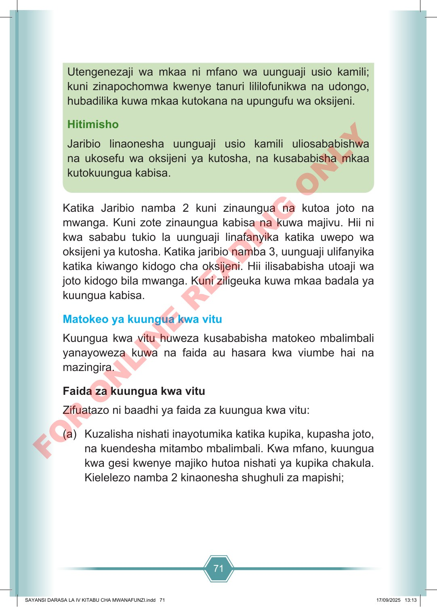

71 Utengenezaji wa mkaa ni mfano wa uunguaji usio kamili; kuni zinapochomwa kwenye tanuri lililofunikwa na udongo, hubadilika kuwa mkaa kutokana na upungufu wa oksijeni. Hitimisho Jaribio linaonesha uunguaji usio kamili uliosababishwa na ukosefu wa oksijeni ya kutosha, na kusababisha mkaa kutokuungua kabisa. Katika Jaribio namba 2 kuni zinaungua na kutoa joto na mwanga. Kuni zote zinaungua kabisa na kuwa majivu. Hii ni kwa sababu tukio la uunguaji linafanyika katika uwepo wa oksijeni ya kutosha. Katika jaribio namba 3, uunguaji ulifanyika katika kiwango kidogo cha oksijeni. Hii ilisababisha utoaji wa joto kidogo bila mwanga. Kuni ziligeuka kuwa mkaa badala ya kuungua kabisa. Matokeo ya kuungua kwa vitu Kuungua kwa vitu huweza kusababisha matokeo mbalimbali yanayoweza kuwa na faida au hasara kwa viumbe hai na mazingira. Faida za kuungua kwa vitu Zifuatazo ni baadhi ya faida za kuungua kwa vitu: (a) Kuzalisha nishati inayotumika katika kupika, kupasha joto, na kuendesha mitambo mbalimbali. Kwa mfano, kuungua kwa gesi kwenye majiko hutoa nishati ya kupika chakula. Kielelezo namba 2 kinaonesha shughuli za mapishi; SAYANSI DARASA LA IV KITABU CHA MWANAFUNZI.indd 71 SAYANSI DARASA LA IV KITABU CHA MWANAFUNZI.indd 71 17/09/2025 13:13 17/09/2025 13:13 F O R O N L I N E R E A D I N G O N L Y